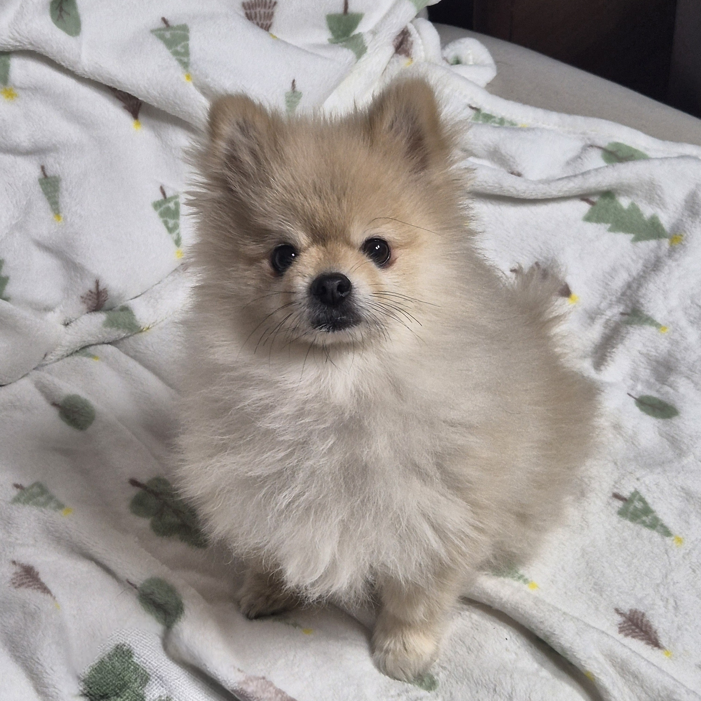

std::N |
|
A Junior Developer Grounded in Basics
|
|
기본이 탄탄한 주니어 개발자.
제가 누구냐고요? |
|
scroll |
|
 Junior System Developer 성능과 효율을 중시합니다 Dong-eui University 컴퓨터소프트웨어공학과 |
VALUES
저는 최고의 성능과 매우 효율적인 최적화를 개발의 핵심 가치로 여깁니다. 따라서 불필요한 리소스 소모를 지양하며, 최상의 성능과 효율적인 최적화를 통해 사용자에게 최고의 경험을 선사하는 것을 개발의 궁극적인 목적으로 삼습니다.GOALS
최고의 효율과 최적화로 사용자에게 최고의 퍼포먼스를 제공하며, 졸업 후에도 끊임없는 도전과 탐구를 통해 독보적인 전문성을 갖춘 시스템 소프트웨어 전문가로 성장하는 것이 목표입니다.MOTIVE
저는 C언어로 알고리즘 문제를 풀 때 작은 로직 차이가 성능에 큰 차이를 만들어 내는것을 경험한 후 알고리즘과 자료구조에 흥미를 가지게 되었습니다. 또한 C언어의 포인터를 통하여 직접 메모리를 제어하는 것에 매력을 느끼며, 시스템의 밑바닥에서 데이터가 어떻게 흐르고 저장되는지를 이해하는 즐거움을 알게 되었습니다.INTERESTS
알고리즘과 자료구조의 원리를 파헤치는 과정을 즐기며, 특히 포인터와 메모리 구조에 대한 깊은 이해를 바탕으로 견고하고 효율적인 로우레벨 코드를 구현하는 것과 온라인 저지 문제를 푸는것에 관심이 있습니다.HOBBIES
평소 코딩 외의 시간에는 서브컬쳐 게임을 즐기거나 음악을 즐겨 들으며 에너지를 충전합니다. 또한 뮤지컬을 보며 스트레스를 푸는 것 또한 좋아합니다. |